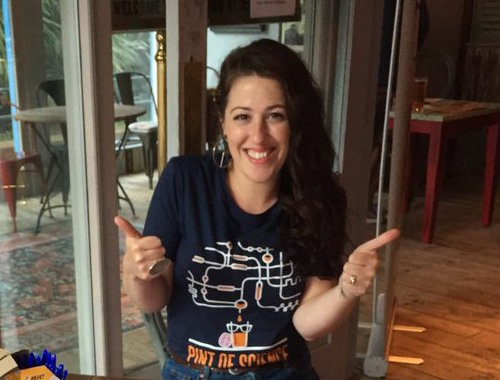
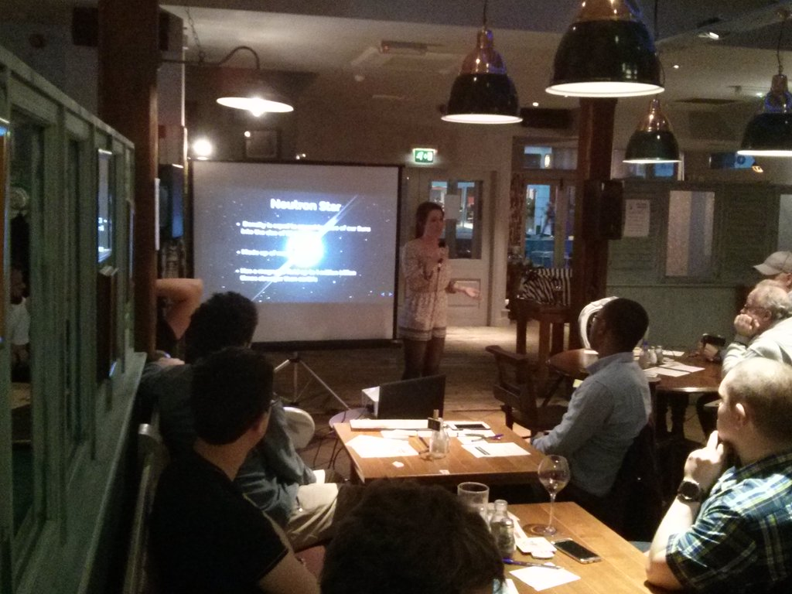

Pint of Science is an international science festival that is held in May each year. The event brings world-leading scientific researchers into the public domain to discuss their research in a pub near you. In 2016, I was a part of the Atoms to Galaxies team for Southampton. I spoke about gravitational wave sources as part of the 'Einstein's Waves' night at Ebb and Flow in Southampton on the 24th of May. For more information please click here.
